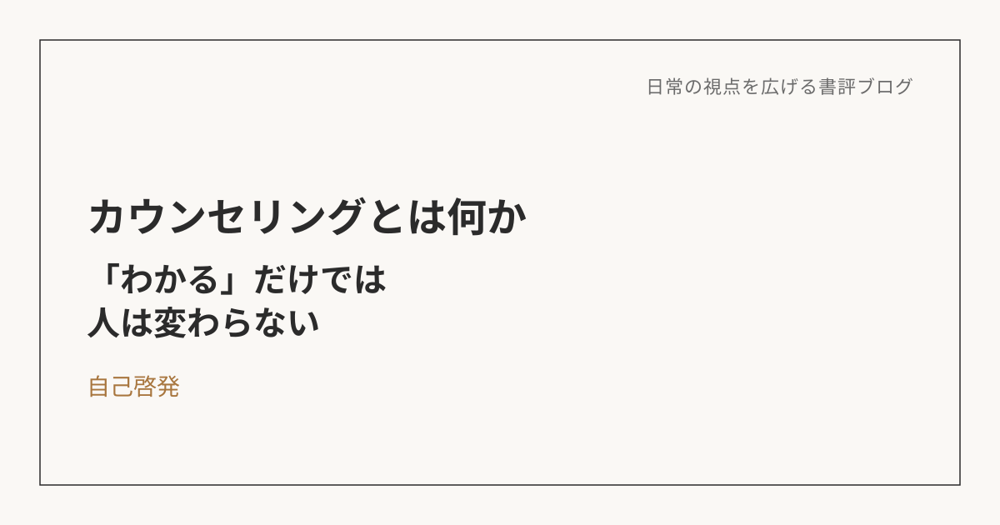

カウンセリングとは何か――「わかっている」だけでは、人は変われない
この本について
東畑開人による本作は、「カウンセリングとは何か」「人はどうすれば変わることができるのか」という、シンプルで、でも普段はあまり正面から問われることのない疑問に向き合う新書だ。臨床心理士として現場に立ち続けてきた著者は、カウンセリングという営みを、大きく二つの視点で捉え直していく。一つは、状況を整理し、地図を描き、今の自分を保つための足場をつくる「作戦会議としてのカウンセリング」。もう一つは、実際に揺れる現場に身を置き、そこで新しい応答を選び取っていく「冒険としてのカウンセリング」。この二つの対比が、読みながら自分自身の歩みと重なって見えてきた。
自分にとっての「作戦会議」だったもの
これまでの自分は、かなりの時間を「作戦会議」に費やしてきたのだと思う。何かに動揺したり、落ち込んだりしたとき、その感情をそのままにせず、何が事実で、何が自分の解釈なのかを分けて整理する。自分がどんな場面で揺れやすいのか、どんな考え方のクセが出やすいのかを言語化する。本を読んだり、いろいろな考え方に触れたりしながら、そうやって自分を俯瞰する力を、時間をかけて育ててきた。
この積み重ねは、決して無駄ではなかった。むしろ、状況を客観視する力、事実と解釈を切り分ける姿勢、執着に気づく感度は、着実に磨かれてきたと思う。今回この本を読んで気づいたのは、それはまさに「地図を作る」作業だったのだということだ。地図があるから、迷わずに済む。今どこにいて、何が起きているのかを、落ち着いて見渡せる。
それでも、変わらなかった部分
ただ、地図を持っているだけでは、実際にその道を歩けるようになるわけではない。頭では「これは考え方のクセにすぎない」「完璧でなくていい」とわかっていても、実際に窮地に立たされる瞬間には、身体や感情が、これまでと同じ反応を繰り返してしまう。そのたびに、「結局、本質的には何も変わっていないのではないか」という感覚が拭えなかった。
理解していないのではなく、理解はしているのに、反応そのものが更新されていない。この本を読みながら、自分がずっと抱えていたモヤモヤの正体が、この一文に集約されているように感じた。
「冒険」という言葉に出会って、腑に落ちたこと
本書を読んで最も大きかったのは、これまで自分がやってきたことの多くが「作戦会議」だったのだと、名前がついたことだった。そして、実際に自分が揺れる場面に出会い、そこで古い反応が出ることを前提にしながらも、それでも少し違う行動を選べた経験が、確かにあったことにも気づいた。感情に飲まれかけた場面から、論点を整理し、次の一手を考える方向へと、自分から戻ってこられた経験。それは、頭で理解して終わるものではなく、実際に体を動かして選び取った、小さな「冒険」だったのだと思う。
作戦会議は地図であり、冒険は実地訓練だ。地図を丁寧に作ってきた自分が、ようやくその地図を手に、実地を歩き始めていたのだと理解できた瞬間だった。
「わかる」と「変わる」は別物、という感覚
この本が与えてくれたのは、まったく新しい知識というよりも、すでに自分の中にあった経験を説明するための言葉だったように思う。「作戦会議」と「冒険」という補助線が引かれたことで、これまで漠然と感じていた「理解しているのに変われない」というモヤモヤの輪郭が、初めてはっきり見えるようになった。
変わるとは、不安や動揺がゼロになることではない。古い反応は、これからも出るだろう。でも、そのあとで一度立ち止まり、事実と解釈を分け、少し違う応答を選べること。その経験を積み重ね、自分の中の新しいクセとして根づかせていくこと。それこそが「変わる」ということなのだと、腑に落ちる感覚とともに理解できた。
これからの記録の仕方
曖昧な状況、評価への不安、責任の重さが重なる場面は、これからも何度も訪れると思う。そのたびに「また同じだった」で終わらせるのではなく、そこでどんな古い反応が出て、そこからどんな新しい行動を選べたのかを、事実と解釈をセットにして記録していきたい。
頭でわかったことを、わかったままで終わらせず、体験として少しずつ積み上げていくこと。それが、この本から受け取った、いちばん実践的な気づきだった。
※本記事はNotionに書き溜めた読書メモをもとに、AIの編集サポートを受けて構成しています。